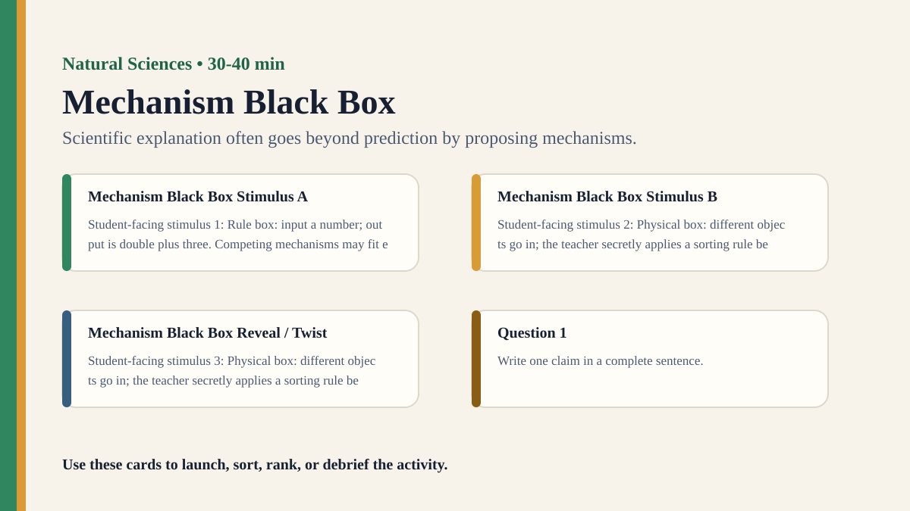

Detailed activity
Mechanism Black Box
Students infer the mechanism inside a sealed system by testing inputs and outputs, then compare competing explanations.
Free classroom activity
Big Idea
Scientific explanation often goes beyond prediction by proposing mechanisms.
Teacher Summary
Students distinguish prediction, correlation, and mechanism.
Use a black-box task to model how scientists infer unseen structures from observable effects.
Materials
- A simple sealed black-box puzzle or teacher-controlled input-output rule.
- Mechanism proposal sheet.
Ready to run
Classroom Resource Pack
Use the printable pack for concrete stimulus cards, a student recording sheet, teacher prompts, and a visual prompt image.
Visual Prompt

Student Prompt
Inspect the Mechanism Black Box stimulus. Record one first claim, the evidence you used, your confidence, and what would make you revise.
Actual Lesson Questions
| # | Question for students | Teacher cue |
|---|---|---|
| 1 | Write one claim in a complete sentence. | Teacher cue: look for a clear claim, not just a description. |
| 2 | List two pieces of evidence. | Teacher cue: students should name visible words, data, source features, method features, or contextual clues. |
| 3 | Separate observation from interpretation. | Teacher cue: this is where assumptions, framing, models, or perspective usually appear. |
| 4 | Circle one confidence level and justify it. | Teacher cue: confidence is data for the debrief, not a grade. |
| 5 | Name one piece of missing information. | Teacher cue: push for method, source, context, comparison, or definitions. |
| 6 | Answer using the activity as evidence. | Teacher cue: students should move from the classroom example to a general TOK issue. |
Concrete Stimulus Packet
Stimulus
Mini Investigation Data
Plant A grew 2 cm with water only. Plant B grew 5 cm with fertiliser. Plant C grew 1 cm but was kept by a colder window. Student claim: “Fertiliser causes faster growth.”
Use this to discuss variables, controls, anomalies, and limits.Stimulus
Mechanism Black Box Example
Rule box: input a number; output is double plus three. Competing mechanisms may fit early examples.
Use this as the activity-specific version of the stimulus.Stimulus
Comparison / Twist Card
Physical box: different objects go in; the teacher secretly applies a sorting rule before returning an output card.
Reveal after students commit to their first judgement.Teacher Key / Reveal
The key move is not the “right answer”; it is the moment students see how scientific explanation often goes beyond prediction by proposing mechanisms.
Setup Notes
- Use a hidden input-output rule that several mechanisms could initially explain.
- Prepare at least one test input that separates competing explanations.
Ready-to-Use Examples
- Rule box: input a number; output is double plus three. Competing mechanisms may fit early examples.
- Physical box: different objects go in; the teacher secretly applies a sorting rule before returning an output card.
Run Resources
- Input-output testing sheet.
- Mechanism diagram card with spaces for rule, prediction, and disconfirming test.
Procedure
- Introduce a black box that produces outputs from inputs according to a hidden rule.
- Groups test inputs and record outputs.
- Students propose a mechanism that could explain the pattern.
- Groups test a new input to discriminate between mechanisms.
- Debrief why explanation requires more than curve-fitting.
Teacher Language
- A pattern that predicts is useful, but a mechanism says why.
- What test would make one explanation fail?
TOK Debrief Questions
- Knowledge question: What is added by knowing a mechanism?
- Can a model predict well without explaining?
- How do scientists choose between competing unseen explanations?
Knowledge Questions
- What is added by knowing a mechanism?
- Can prediction count as explanation?
- How is unseen scientific knowledge justified?
Sample Student Output
- Two rules fit the first three inputs, so we needed a new test case.
- Our explanation became stronger when it predicted an output we had not seen.
Exhibition Object Idea
A black-box input-output table with two competing mechanism diagrams.
Adaptations
- Support: use number rules with simple arithmetic.
- Challenge: include noisy data where one output is unreliable.
Extension Tasks
- Students compare mechanism in science with interpretation in history or arts.
- Ask groups to design a black box for another group to investigate.
Teacher Notes
The black box can be physical or simply a hidden rule you apply consistently.
Emphasize testing between explanations, not merely finding any pattern.